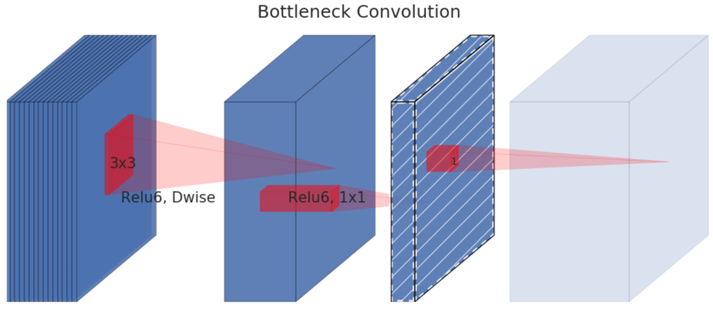
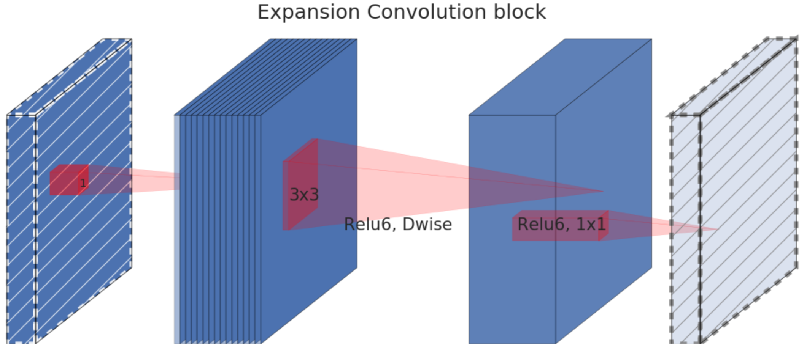
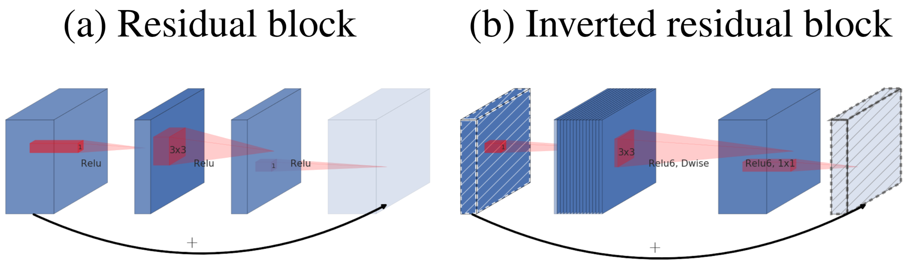

painterdrown Blog - painterdrown CV
⏰ 2018-05-28 19:16:22
👨🏻💻 painterdrown
[TOC]
这篇论文介绍了一种新的移动神经网络架构 MobileNetV2，提升了多任务的表现以及涵盖了不同大小的模型。SSDLite 用于目标检测，MobileDeepLabv3 用于语义分割。MobileNetV2 是基于残差结构，其中间拓展层使用了非线性轻量深度卷积来对 feature map 进行过滤。MobileNetV2 支持对输入输出域做解藕。
意思大概是，目前最前沿的用于目标检测的神经网络模型，都需要大量的计算资源，因此不适用于移动设备和嵌入式设备。MobileNetV2 应运而生，有三个特点：
上面说的三点其实跟 MobileNets 一样。而 MobileNetV2 的主要创新之处是在神经网络层：the inverted residual with linear bottleneck（线性瓶颈的反向残差结构）。我在 CSDN 找到一篇论文是这样解释的：
通常的 residuals block 是先经过一个 1*1 的 conv layer，把 feature map 的通道数“压”下来，再经过 3*3 conv layer，最后经过一个 1*1 的 conv layer，将 feature map 通道数再“扩张”回去。即先“压缩”，最后“扩张”回去。而 inverted residuals就是 先“扩张”，最后“压缩”。
linear bottlenecks，为了避免 relu 对特征的破坏（我们知道 relu 函数只取输入的非负值，且认为这个行为导致了信息损失），在 residual block 的 Eltwise sum 之前的那个 1*1 conv 不再采用 relu。
这个方法先是接收一个低维、压缩的特征表示，然后拓展其到高维，在用一个轻量深度卷积进行过滤。过滤后得到的特征会被一个线性卷积映射回低维的表示。
参考：MobileNets 学习笔记 中的 Depthwise Separable Convolution
这里的深度可分离卷积跟 MobileNets 的唯一区别在于：MobileNets 的输入输出都是正方形的 feature，而 MobileNetV2 则允许长宽不一样。


这一段不太好理解，我感觉就是 ReLU 会损失负数的那部分信息，因此要想办法换成不会损失信息的线性激活函数。作者提到两点：
因此，如果 manifold of interest 是低维的话，我们就可以通过往卷积块插入 linear bottleneck 层捕获之。

这一段更是看得我云里雾里的，遂果断查博客。
残余块将卷积块的开始和结尾连接到跳过连接。通过添加这两个状态，网络有机会访问在卷积块中未修改的早期激活。这种方法对于建立深度网络非常重要。残余块将宽层与跳跃连接相连，而层之间的层较窄。
当我们稍微靠近跳过连接时，我们会注意到, 原始的残余块会跟随一个宽 >> 窄 >> 宽的方法来处理通道的数量。输入信道数量很多，并用廉价的 1*1 卷积进行压缩。这样下面的 3*3 卷积的参数就少得多了。为了最终增加输入和输出，使用另一个 1*1 卷积再次增加通道的数量。